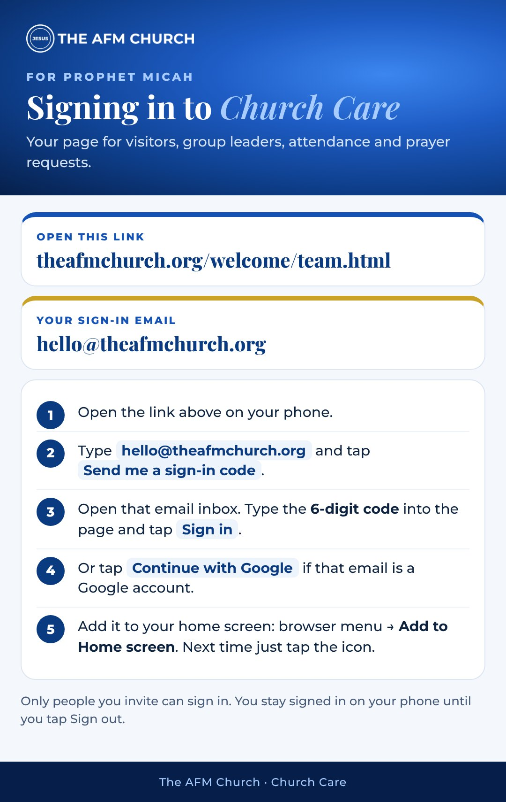
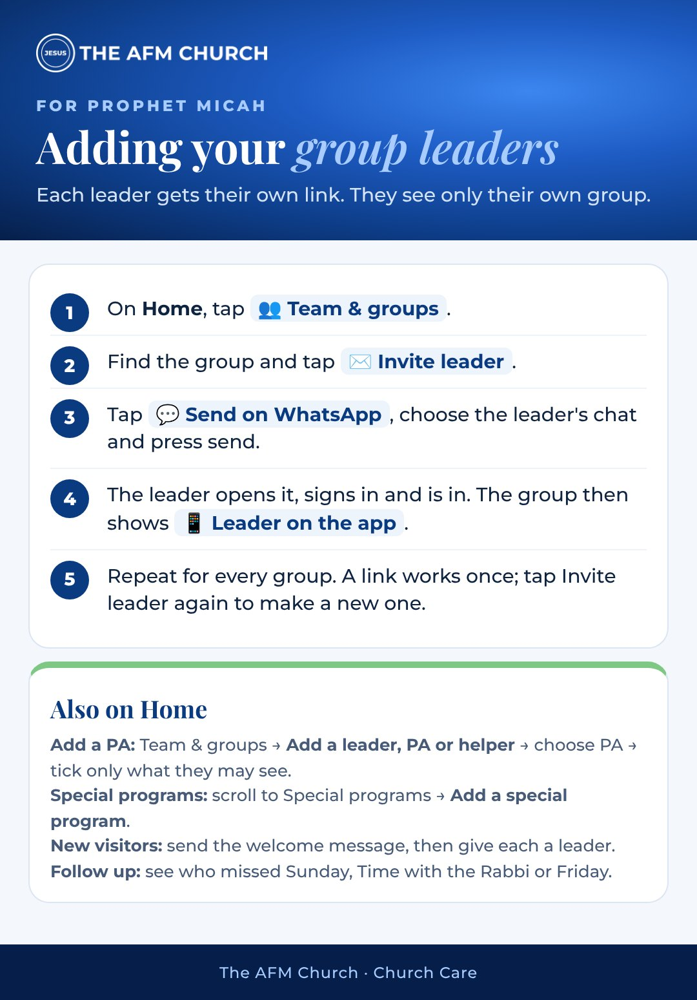
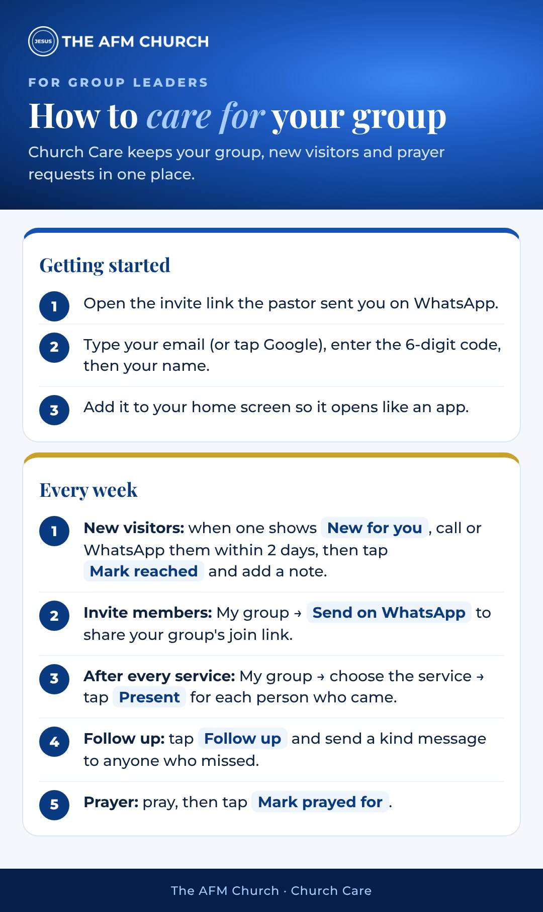
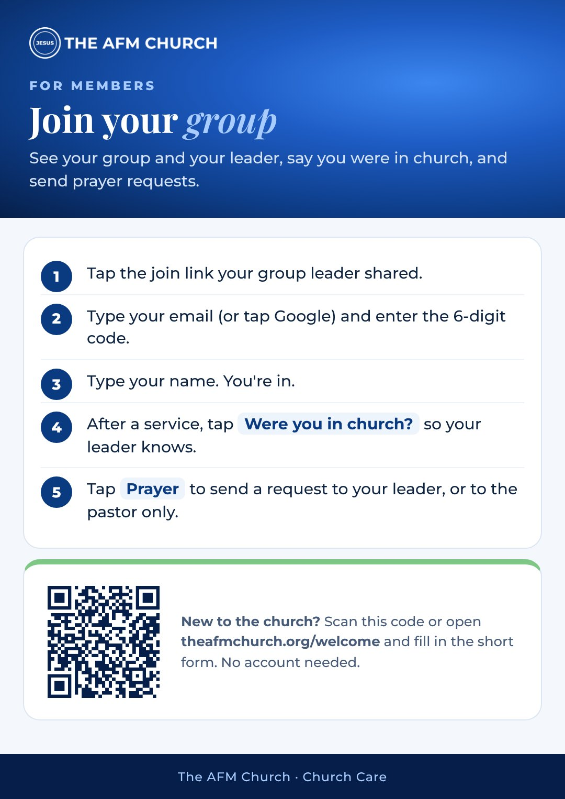

For the pastor, group leaders and members.
Team and members sign in at theafmchurch.org/welcome/team.html. Visitors use theafmchurch.org/welcome.
About 5 minutes, step by step, with sample people. Music: Asomdwe by Prophet Micah Felix Azanduna.



